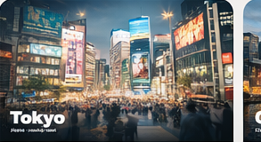
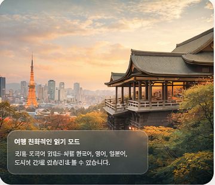
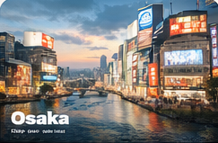
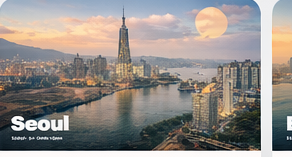
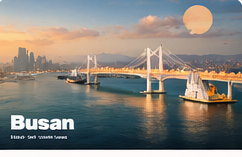
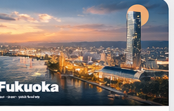

Tokyo Travel Guide: area logic, food zones, first-trip rhythm
Divide the city by neighborhood so you spend less time in transit and keep the day flowing.
도쿄, 오사카, 교토, 서울, 부산, 후쿠오카를 중심으로 실제 여행 검색 의도에 맞는 도시 가이드를 모았습니다.

도시 이미지를 먼저 보여주고, 공유했을 때도 무엇을 보는지 바로 이해되게 구성합니다.

Divide the city by neighborhood so you spend less time in transit and keep the day flowing.

A more practical way to group Dotonbori, Umeda, and nearby stops without rushing.

Use softer time blocks to avoid crowd spikes and keep Kyoto calm and walkable.

A balanced first Seoul day that mixes view points, cafés, and light evening walks.

Bundle beach, lookout, and market energy into one route that still feels easy.

A short-stay structure that makes the most of Fukuoka's calm, food-led pace.